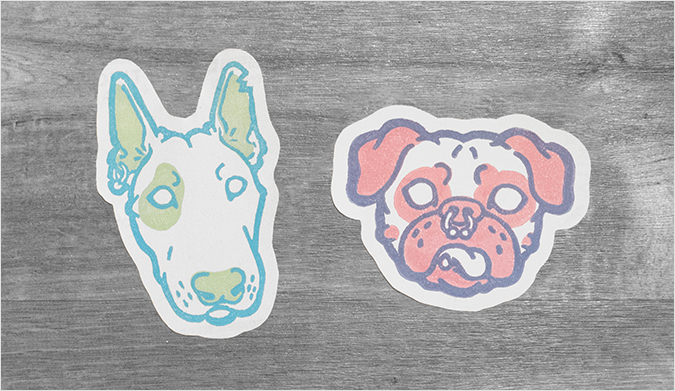

<section class="l-section l-wrapper-large portfolio">
  <div class="l-two-up l-two-up--unequal">
    <div class="l-two-up__item">
      
      
      
      
      
    </div>
    <div class="l-two-up__item">
      <h4>Pup Portraits</h4>
      <p>As an on-going series, my canine friends have been a great opportunity to experiment with my illustration style and play with visual balance and hierarchy. Each 2 to 3 layer block print starts as a grayscale digital sketch before coming to life as prints in a variety of color schemes.</p>
      <p>Carving these vector illustrations onto printing blocks always proves challenging. However, once finished I always appreciate the personality of the imperfect, hand-made lines, and the combination of the new and traditional mediums.</p>
      <p>With my number of pup prints soon running into the thousands, I have had a lot of time to play with color schemes. Although I originally felt my small collection of red, yellow, blue, white, and black was limited, after a few rounds of mixing I’ve found that creating new colors within these constraints was half the fun!</p>
    </div>
  </div>
</section>
